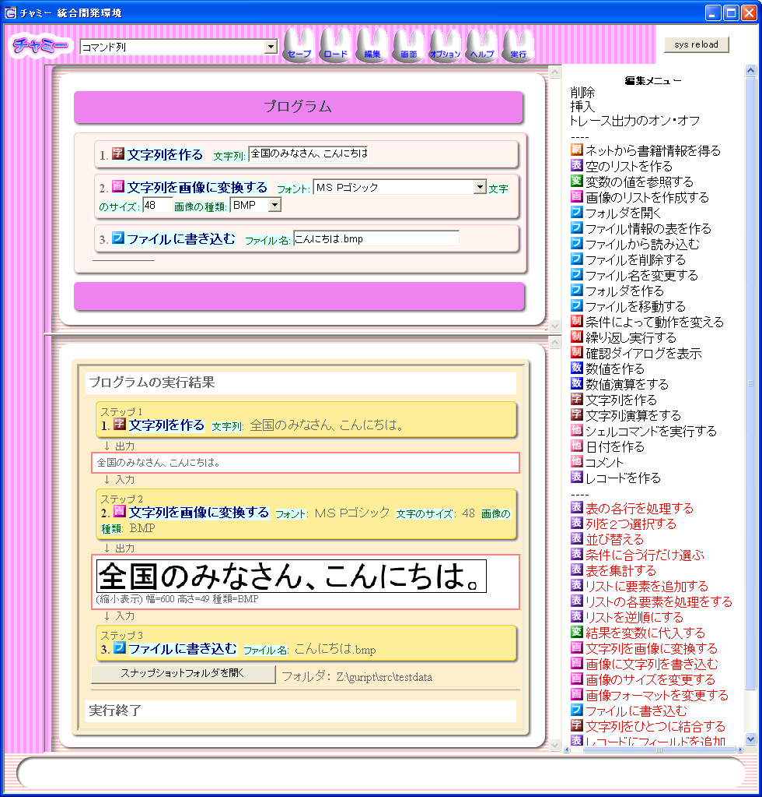
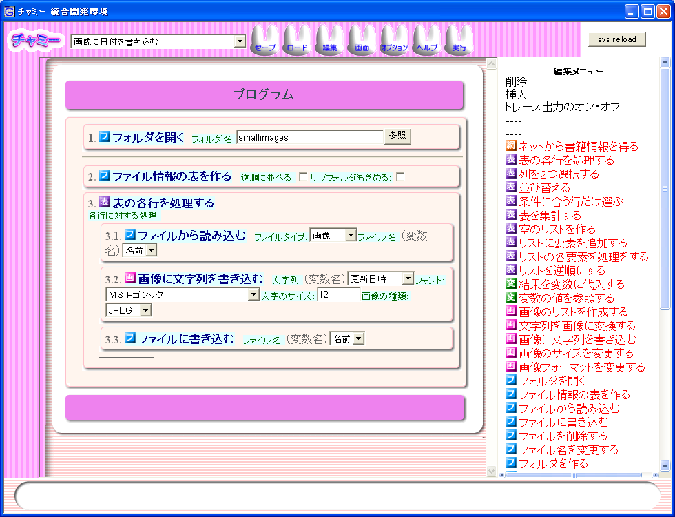
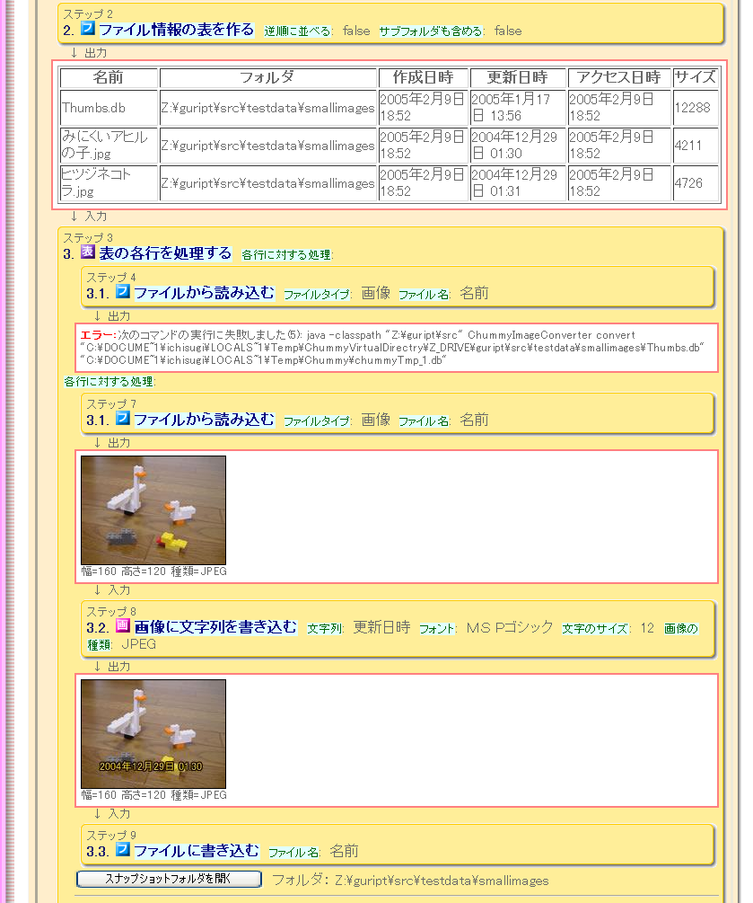
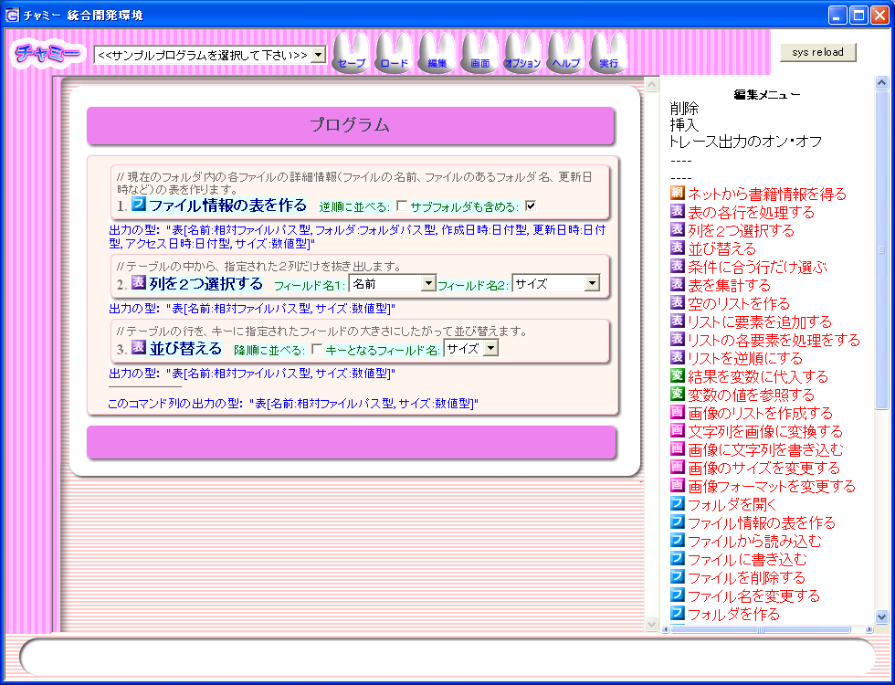

(PPL 2005 発表論文)
産業技術総合研究所 情報技術研究部門 一杉裕志、 古川浩史
我々はエンドユーザ向けのスクリプト言語 チャミー を設計・実装中である。 初心者にとって習得しやすいプログラミング言語は いかにあるべきかを考察しながら、 シンタックス、制御構造、組み込みデータ型、標準ライブラリ、開発環境 （エディタ、デバッガ）の 設計を行っている。 チャミー言語は関数型言語の利点を積極的に取り込んだ手続き型言語である。 チャミーのIDE(統合開発環境)は、 日本語化された構造エディタ、 実行トレースの可視化表示などの機能を持ち、 プログラミングに不慣れなエンドユーザによるプログラム開発を支援する。 チャミーは ファイル処理等の現実世界のデータ処理に用いることができ、 それを支援する仮想フォルダ、実行時エラーリカバリと呼ぶ機構を持っている。
GUI を使ってPCで日常的に作業を行っているユーザ（以下エンドユーザ）は多いが、 その中でプログラミングができる人々は少ない。 ほとんどの人々は複雑な作業を自動化できず、 いつも同じ手作業を繰り返さざるを得ない。 ある程度プログラミングができるユーザにとっても、 日常的作業の自動化は、気軽に行える状況にあるとは言い難い。
Mac OS の AppleScript は、エンドユーザにより処理の自動化を 少しでも容易にするように設計されたスクリプト言語である。 文法を自然言語に似せるなど、エンドユーザ向けの工夫はあるが、 GUI アプリケーションに比べると、明らかに使いにくく、敷居が高い。 スクリプタブルな（スクリプトにより制御可能なように設計された） アプリケーションが依然として少ないのは、 それを使いこなせるユーザが少なく、 需要がないためだと想像できる。 Windows でも同様に ActiveXオートメーションという機構によって Visual Basic などからアプリケーションを制御可能であるが、 やはり対応アプリケーションは少ない。 もし、現在よりも多くのユーザが習得可能な スクリプト言語ができれば、ユーザによる需要が増え、 多くのアプリケーションが自動制御に対応していくと考えられる。
現在のプログラミング言語は、ある程度の訓練を積まないと 内容を理解できず、修正ができない点も問題である。 もしプログラムの動作が理解でき修正できれば、 スクリプトは「単なるブラックボックス」から 「動作の厳密な仕様書」へと変わる。 例えばそれが職場における業務を自動化するものであれば、 複数の職員の目によるチェックと改良の対象となる。 つまり、エンドユーザ自身による開発・テスト・保守のサイクルが実現する。 問題領域に対する知識を最も持っているのはユーザ自身である。 もし外部業者に発注せずに自分自身でプログラムの保守が可能であれば、 コストが低くてすむだけでなく、ユーザが望むプログラムが すばやく手に入ることになる。また、トラブル時の対処も迅速に行える。 （このようなエンドユーザ自身による開発は End-User Development と呼ばれている[1]。）
習得の容易なプログラミング言語は、プログラミングの入門用としても もちろん適している。 その言語で実用的アプリケーションが書けることは、 プログラミングを学習する際の動機付けにもなる。
我々は以上のような背景のもと、エンドユーザにとって習得が容易な チャミーというプログラミング環境を開発中である。 現在、以下の目標に基づいて設計を行っている。
想定するチャミーの使われ方を説明するために、 まずユーザの階層を以下のように定義する。
ここで「既存のプログラム」とは大きくても数十行程度のプログラムであり、 下記の方法で入手するものと想定する。
我々の設計目標は、 レベル１〜２のユーザにとってできるだけ多くの実用的な機能を提供できること、 および、レベル１〜４のすべてのユーザにとってできるだけ使いやすいことである。
例えば、プログラムを理解しやすくするためには、 構文要素のネストが少ないこと、 変数・ループ・論理演算といった分かりにくい概念をできるだけ 使わずにプログラムが書けるように工夫することが必要である。 また、ちょっとした修正を安全かつ容易に行えるようにするには、 構造エディタによる支援が有効であると考える。
以降の章では、まず２章でチャミーの概要を簡単に述べたあと、
３章では文法、
４章ではプログラミング言語としての特徴、
５章では組み込みデータ型と標準コマンドの特徴、
６章ではIDEとしての特徴について述べる。
７章では様々な観点からチャミーの基本設計について議論し、
８章では実装について簡単に述べる。
９章では関連研究について述べ、
最後に１０章でまとめと今後の課題について述べる。
図１は、チャミーのIDEのスクリーンショットである。 
図１ チャミーIDEのスクリーンショット
画面中央の上側のフレームはプログラムのソースコードが表示される
「エディタ画面」である。
画面中央の下側は実行結果を表示する「トレース画面」である。
エディタ画面は、チャミーのプログラムの構造エディタになっている。
チャミーのプログラムは、比較的粗粒度のコマンドの列である。
コマンドの引数は、セレクタ、チェックボックス、テキストフィールドなどの
GUI 部品を使って入力できるようになっている。
コマンドの引数にコマンド列を書くこともできる。
つまり、コマンドがネストした複雑なプログラムを書くことができる。
画面右の編集メニューには、
エディタのカーソル位置に挿入可能なコマンド一覧が出ており、
マウスでクリックすることによってコマンドを挿入できる。
各コマンドに左側のアイコンは、そのコマンドが属するカテゴリを
表している。
実行ボタンを押すと、プログラムの上から順にコマンドが実行される。
各コマンドの出力は、
Unix のパイプのように、次のコマンドの入力として渡される。
実行過程および実行結果は、トレース画面に視覚的に分かりやすく出力される。
チャミー言語は以下の特徴を持っている。
（なお、現在のところ、ユーザによるコマンド定義および
パッケージの機構は、持っていない。）
チャミーIDEは現在以下の機能を備えている。
それぞれの機能について、以下の章で詳しく述べていく。
チャミープログラムは文字列表現ではないため、
正確に文法定義することは難しいが、
拡張BNF風に擬似的に表現すると図２のようになる。
図２ チャミー言語文法の拡張BNF風定義
文法はこのようにシンプルである。
文法のシンプルさは、構造エディタの操作の習得のしやすさ、
チャミーIDEの実装・保守・機能拡張のしやすさ、
サードパーティによる新規チャミーコマンドの追加のしやすさ、
といったメリットをもたらす。
コマンドの引数の入力方法には、フォーム、
コマンド列、計算式、
変数参照の４種類のスタイルがある。
エディタ画面で引数名をクリックしてからラジオボタンを選択することで、
スタイルを切り替えることができる。
フォームスタイルは、 GUI 部品を用いた入力方法で、
従来のテキストベースのプログラミング言語における定数リテラルに
相当する。例えばチェックボックスは真偽値リテラル、
テキストフィールドは文字列リテラルである。
セレクタは、値の候補が決まっている場合や、
変数名やフィールド名の選択に使われる。
コマンド列スタイルは、０個以上のコマンドの列を指定するスタイルである。
これにより、プログラムはネスト構造を持つことができ、
if 文のような制御構造を表現することができる。
コマンド列スタイルの引数は、
関数型言語でいうクロージャに相当する。
詳しくは４．２節で述べる。
計算式スタイルでは、テキストフィールドの中に JavaScript の式をテキストで
記述する。
式の中ではチャミー言語の変数を参照することができる。
ただし、変数名の先頭に
変数参照スタイルは、変数名をセレクタで指定する。
セレクタの候補には、その引数が期待する型に適合する変数名のみが挙げられる
ため、計算式スタイルよりも簡単かつ安全に変数名の入力が行える。
チャミー言語のプログラムは、コマンドの列である。
すべてのコマンドは、直前のコマンドの実行結果を入力として受け取り、
それに対して何らかの処理を行い、
次のコマンドに自分自身の実行結果を渡す。
個々のコマンドは、関数と考えることができる。
コマンド列によるプログラム記述は、実行の順序（コントロールフロー）と
データの流れ（データフロー）の両方がプログラムの字面と
一致しているという点も、プログラムを理解しやすくしている。
（この利点を損なわないように、
変数や制御構造をできるだけ使わずにすむように、
標準コマンドを設計している。）
なお、複雑なデーターフローをコマンド列で視覚的に表現することはできない。
これについては、7.3節で議論する。
コマンド列は、オブジェクト指向言語におけるメソッド呼び出しの
連接とみなすこともできる。
この場合
コマンド列は、6.3節で述べるように、型情報を用いた入力支援にも有利である。
直前のコマンドの出力の型の情報を利用して、
次に入力すべきコマンドの候補や引数の候補をしぼることができる。
入力として値を受け取らないコマンドや、値を出力しないコマンドもあるが、
内部的にはそれぞれ ML のように「 unit を受け取る」、「 unit を出力する」
コマンドとして実装されている。
プログラムの先頭には、必ず unit を受け取るコマンドが来る。
コマンドは、１つずつ逐次的に評価される。
Unix のパイプのように並列には実行されない。
これは、並列実行による非決定性によりユーザを混乱させないためである。
並列実行では、パイプを流れるデータがすぐに消費されるので、
実行に必要なメモリの量が少なくなるという利点があるが、
今日の計算機環境ではメモリ使用量はあまり問題にならない。
（それが問題になるような巨大なデータも扱えるように
最適化を行うことは、将来の課題である。）
コマンドの引数は call by name によって、
コマンドに渡される。
（現在はユーザがコマンドを定義する機構はないが、
ユーザ定義コマンドも call by name で引数を受け取るよう実装する
予定である。）
call by name とは、マクロのように、手続きの呼び出し側に、
呼び出される側の本体が展開されたかのように実行される、
という呼び出しスタイルの１種である。
実装方法の１つとして、
引数として書かれた式をクロージャにして渡し、
呼ばれた側では引数を参照するたびにそのクロージャを
呼び出すという方法がある。
チャミーではすべての式が１引数関数であるから、
call by name によって渡されるクロージャも１引数関数になる。
例えばコマンド列スタイルの引数に
という関数が渡される。
また、計算式スタイルで
というクロージャが渡される。
呼び出されたコマンドは、必要に応じて渡されてきたクロージャに
何らかの値を適用する。
例えば「リストの各要素を処理する」
というコマンドが、数値のリストを入力として受け取ったとする。
（このコマンドは関数型言語で言う map である。）
このコマンドは、リストの各要素の数値を、コマンド列として与えられた
関数クロージャに次々に適用し、
結果の各値を新しいリストにして出力する。
call by name は、
Smalltalk や Ruby のブロック引数のように、抽象度の高い
制御構造を提供可能にし、
プログラムの書きやすさ、読みやすさを向上させる。
なお、これらの言語ではブロックを記述するための特別な構文が必要だが、
チャミーでは call by name を採用することにより、
特別な構文が不要になっている。
また、チャミーではすべてのコマンド列が１引数関数なので、
ブロックの第一引数を明示的に書く必要がない。
これにより入力の手間や仮引数の変数名を考える手間が減っている。
２つ以上の値を受け取る関数を書きたい場合は、記法が冗長になるが、
5.2節で述べるレコード型を使えばよい。
なお、 Algol60 の call by name では、変数を引数に渡した場合、
呼ばれた側でその変数に代入することができた。
一方チャミーでは、例えば変数参照スタイルで変数 x を引数に渡した場合でも、
それは関数
一般に call by name は言語機能としては強力すぎ、
読みにくいプログラムを書くことができてしまうが、
チャミーの標準コマンドはその点にも配慮をしている。
制御構造の本体のように実行の遅延が本質的に必要な引数は
デフォルトのスタイルがコマンド列スタイル、
それ以外の call by value と解釈しても問題ない引数については
デフォルトのスタイルがフォームスタイルになっている。
したがって、ユーザが引数のスタイルを変えない限りは、
スタイルが引数の評価のされかたに関するヒントを与えており、
可読性が悪くならないようになっている。
変数に値を代入するには、「結果を変数に代入する」というコマンドを使う。
代入コマンドは、入力として受け取った値を引数で指定した名前の変数に
代入する。
チャミーでは明示的な変数宣言も型宣言も不要である。
プログラムを上から順に眺めていき、はじめて変数への代入が出現すれば、
それが変数宣言である。
そのときの直前のコマンドの出力の型が、
変数の静的型になる。
変数名は、デフォルトでは型名に数字を連番で付加したものになる。
例えば、文字列型の変数の名前は、
出現順に
変数の値を参照するには、３章で述べた
変数参照スタイルを用いるか、
「変数の値を参照する」とういコマンドを使う。
変数を扱うプログラムは少し冗長になるが、
チャミーにおけるエンドユーザのプログラミングでは、
変数はあまり使わないために問題にならないだろうと考えている。
チャミーに標準で用意されているコマンドの多くは多相的な関数である。
例えば上記 map 関数
（「リストの各要素を処理する」コマンド）の型は、
ML 風に表記すると次のようになる。
（ただし、チャミーのコマンドはカリー化できる
わけではない。）
型推論を行う関数型言語ではユニフィケーションによって
各式の型が徐々に決まっていくが、
チャミーではプログラムの字面上の先頭から末尾に向かって、
型変数を含んだ型宣言とのパターンマッチだけで、一方向に型が決まっていく。
つまり、１つのコマンドに着目すれば、まず入力の型が決まり、
次に引数の型が左から順に決まり、最後に出力の型が決まる。
例えば map 関数の場合、直前のコマンドの出力の型が整数のリストならば、
上記型変数
この型システムは、ＩＤＥによるインクリメンタルな型チェックと相性がよい。
つまり、プログラムを先頭から入力していけば、
入力の途中であってもすべてのコマンドが型付けされていることになる。
型が決まっていれば、6.3節で述べるように、
型情報を利用した入力支援をエディタが
行うことができる。
また、型エラーの場所が明示されるため、
ユーザにとってどこを修正すればよいかが比較的わかりやすいという
効果がある。
この型システムはユニフィケーションを用いる型システムと比べて
明らかに制約が強く、表現可能な多相関数が少なくなるが、
実用上問題となる場合があるかどうかは、現時点では不明である。
ユーザ定義コマンドや first class object として扱える無名関数は未実装であるが、
これらの関数の引数の型については上で述べた方法で型は決定できない。
ユニフィケーションを用いた型推論の機構や、
テストコードに書かれた具体的な引数の型の情報などを使って、
型宣言を不要でなおかつ入力支援を可能にすることができないか検討中である。
組み込みのデータ型は、現在のところ、すべて immutable である。
これにより、副作用による分かりにくいバグが発生する可能性を
排除している。
例えば画像処理用には、画像オブジェクトと呼ぶ immutable な
データ型を提供している。
サイズの変更、画像フォーマットの変更、文字列の埋め込み
などは、画像オブジェクトを入力として受け取り、画像オブジェクトを
結果として出力するコマンドとして提供される。
この他に、数値、文字列、日付、パス名、
次の節で述べるリスト、レコードなどのデータ型がある。
標準コマンドに関しては、
Unix の ls, sort などのコマンドの設計方針にならい、
粗粒度かつ高機能で、汎用性が高く、組み合わせの自由度が高い
ものを提供している。
図３は、あるフォルダ内のすべての画像に、
撮影された日時（ファイルの更新日時）を書き込むプログラムの例である。
本章の以下の節では、この例をもとに、
他の特徴的な機能について説明する。

図３ 画像に日付を書き込むプログラムの例
チャミーでは、リスト、レコード、表が中心的なデータ構造であり、
それを処理する制御構造が提供されている。
リスト型とレコード型は、ML のものと同様である。
リスト型の値は、同じ型の値が０個以上並んだものである。
レコード型の値は、フィールド名と対応するフィールドの値のペアが
０個以上並んだものである。
そして、レコードのリストは特別に表と呼ぶ。
図３の２行目の「ファイル情報の表を作る」コマンドは、
Unix の ls に相当し、表を結果として出力する。
結果の表には、「名前」、「更新日時」、「サイズ」などのフィールドが含まれている。
３行目の「表の各行を処理する」
コマンドは、表の各行（レコード）ごとに、指定されたコマンドを適用する
制御構造である。
ループ本体の実行中は、レコードの各フィールドの値は、
フィールド名と同名のローカル変数に束縛される。
この機能により、ユーザは変数参照スタイル等を使って簡単に
フィールドの値を参照することができる。
図３では、3.1. 行目、 3.2 行目, 3.3 行目で、
「名前」と「更新日時」というフィールドを変数参照スタイルで参照している。
なお、ループ本体は unit を受け取る関数である。
２重ループなどで変数名が重複する場合は、
「フィールドの値を参照する」
というコマンド等を用いた
冗長な記法を用いる必要があるが、
エンドユーザがそのような複雑なプログラムを書く
可能性は少ないと考えている。
ファイル操作を行うプログラムが安全に開発できるように、
仮想フォルダと呼ぶ機構を提供している。
ファイルを操作するプログラムは、
バグがあると大事なファイルを破壊してしまう危険性がある。
また、テスト実行の際に、前回のテスト実行の結果が残っていると、
意図しない動作が起きてプログラマを悩ますこともある。
このようなことを避けるためには、
開発時にはテスト用のフォルダ以外は操作しないこと、
テスト実行のたびにテスト用のフォルダを初期状態に戻すことが
必要である。
このような開発スタイルを自動的に支援するのが仮想フォルダ機構である。
プログラムが操作しようとするフォルダは自動的に別の領域にコピーされ
（これを仮想化と呼ぶ）、
すべてのファイル操作はそのコピーに対して行われる。
IDE を使ったプログラム開発の最中には、
ユーザが明示的に指示を出さない限り、
仮想化されたフォルダ以外は決して変更されない。
（フォルダの中身を読むだけで書き込まない場合は仮想化は必要ないが、
現在のところ、そのような最適化は実装していない。）
例えば図３のプログラムは
フォルダ内の画像ファイルを書き換えるものだが、
開発の途中では、仮想化されたファイルが書き換わるだけである。
実行ボタンを押すたびに仮想フォルダは初期化されるので、
毎回同じ結果を得ることができる。
仮想フォルダの機構はオプションの設定でオフにすることができるが、
その際、プログラムの変更は全く必要ない。
仮想フォルダは実行時のオーバーヘッドを伴うが、
それが問題になる場合は、
小さいテストデータで十分にデバッグをすませた後、
オフにして実行するようにすればよい。
現在の実装では、
あるフォルダが仮想化される時、そのフォルダに含まれる
すべてのファイルとサブフォルダが再帰的にコピーされる。
この戦略は、変更を行わないかもしれないサブフォルダも
コピーするために効率が悪いが、
外部プログラム呼び出しを行うために必要である。
例えばチャミーのプログラム中から DOS のコマンド列を実行することができるが、
呼び出された外部プログラムは、
絶対パスを使わずにカレントフォルダ以下のファイルのみを
操作する限りにおいては、仮想フォルダ機構とは無関係に、
正しく動作する。
なお、仮想フォルダの機構とは直交したデバッグ支援機構として、
フォルダのスナップショットを取る機構もある。
これについては、6.4節で述べる。
プログラムは構造エディタを使って主にマウスを使って書く。
コマンド名やパラメタ名は日本語で書かれているため、
多くの日本人ユーザにとって理解しやすい。
構造エディタのおかげで、ユーザはシンタックスエラーに
悩まされることはない。
また、「ダブルクォートはどうやって文字列リテラルの中に書くのか？」
といった、初心者を悩ませる問題も起きない。
入力されたプログラムは編集のたびに全体が型チェックしなおされ、
型エラーがあれば該当箇所に赤字で表示される。
型情報は抽象構文木のノードに付加され、
次の節で述べる、入力支援に用いられる。
なおチャミーは静的型付言語であるが、
型エラーがあってもプログラムを実行することができる。
その場合、実行時エラーが発生することになるが、
開発時にコードの一部の実行結果を早く見たいときには非常に有効な機能である。
（なお、最近の Java 言語の IDE でも、
エラーのあるプログラムを実行する機能はすでに実現されている。）
チャミーIDEはさまざまな方法でプログラムの入力を支援する。
入力支援は、入力の手間の低減、
間違った入力の防止を目的とする。
コマンド挿入制約は、カーソル位置に挿入するコマンドが、
型的に正しいものとなるように IDE が支援する機構である。
図１の画面右側の編集メニューには、カーソル位置に挿入可能な
コマンドの一覧が出ている。
ここでは、静的な型情報を用いてコマンドを選別している。
つまり、カーソル位置に入力される型に適合するコマンドは黒色で表示され、
それ以外のコマンドは赤色で表示される。
（これは Eclipse のような IDE が
入力中の式の型を把握して、呼び出し可能なメソッドのみを
コード補完の候補として提示する機能に相当する。）
引数制約は、引数に入力可能な値に関する制約を IDE がユーザに
強制する機構である。
例えば、
表オブジェクトに対して操作する多相的なコマンドの１つに
「並び替える」コマンドがある。
このコマンドは並び替えのキーとなる列名を引数にとるが、
この引数はセレクタで入力するようになっている。
セレクタの選択肢は、直前のコマンドが出力する値の静的型から決定される。
例えば、直前のコマンドが「ファイル情報の表を作る」
であった場合は、選択肢は「名前、更新日時、サイズ、・・・」となる。
また、直前のコマンドが
「ネットから書籍情報を得る」に代われば、
選択肢は自動的に「書名、出版社、出版日、価格」に代わる。
「変数の値を参照する」コマンドも、
引数はセレクタである。
選択肢は参照可能なすべての変数名であり、
IDE がプログラム全体を解析して得られた結果が常に反映される。
デフォルト値入力は、コマンドを挿入したときに、
引数に自動的にデフォルトの値を入れることによって、
ユーザによる入力操作を軽減する機能である。
現在のところ、コマンドごとに決まった値をデフォルトで入力するだけだが、
プログラムの前後の文脈、編集作業の文脈などの情報を利用することによって、
ユーザが入力しそうな値をより高い精度で推測することが可能であろう。
現在のスクリプト言語では、さまざまな省略記法を導入することで
ユーザの入力の手間を減らそうとしている。
しかし、言語設計者の推測がユーザの意図と食い違ったときには、
分かりにくいバグの原因になりうる。
一方ＩＤＥによるデフォルト値の推測は、間違ったとしても
推測結果がユーザの目に見えるので、ユーザはその場で気づいて修正することができる。
プログラムを実行すると、画面中央にトレース画面が開き、
そこに実行の過程が出力される。図４は、図３の「画像に日付を書き込む
プログラム」を実行した結果、表示されるトレース画面の一部である。

図４ 画像に日付を書き込むプログラムのトレース画面の一部
トレース画面には、実行したコマンドと、
コマンドの出力の値（赤い枠で囲まれている）が、
交互に表示される。
ネストしたコマンドの実行も、ネストして表示される。
表オブジェクトや画像オブジェクトは、
視覚的に分かりやすく表示される（図４のステップ２、７、８の出力）。
ファイル操作コマンドの場合は、そのコマンドの実行直後の
カレントフォルダの中身のスナップショットがとられ、
「スナップショットフォルダを開く」というボタンがトレース画面に出力される
（ステップ９）。
そのボタンを押すことで実行途中におけるフォルダの状態を
確認することができる。
チャミーにはデバッガと呼ばれるものはなく、
代わりにトレース画面を使ってデバッグする。
デバッガでプログラマが通常見る情報、
すなわち実行途中におけるプログラムの位置、変数の値などは、
すべてトレース画面に提示されている。
また、デバッガによるステップ実行は、トレース画面のスクロールに対応する。
通常のデバッガではできない逆向きのステップ実行は、
逆向きのスクロールに対応する。
将来的には、デバッガと同じインターフェースによって、
トレース画面とソースコードの同期を取りつつ
正逆方向のステップ実行をしたり、変数の値が参照できる
トレースナビゲータを実装する予定である。
チャミーのインタープリタは、プログラム実行中になんらかのエラーが発生しても、
その実行結果に明らかに依存しない計算は続行する。
この機能を実行時エラーリカバリと呼ぶ。
（似た機能は、 Unix の make コマンドの -k オプションで
実現されている。）
例えば図４の実行例の場合、
Thumbs.db という画像ファイルではないファイルから
画像を読み込もうとしたために、エラーが発生している（ステップ４）。
しかし、「表の各行を処理する」コマンドの
次の実行は問題なく継続している（ステップ７）。
この機能により、異常データに対する頑強性が増す。
また、一度のテスト実行で複数の実行時エラーを見つけられるため、
デバッグの効率が上がる。
多くのスクリプト言語では、データの実行時自動型変換のような機構で
異常データに対する頑強性を実現している。
しかし実行時自動型変換は時として見つけにくいバグを生み出したり、
潜在的バグの発見を遅らせたりするため、好ましくない。
対照的に、チャミーの実行時エラーリカバリでは、
続行されたプログラムの動作は
エラーが起きなかった場合と厳密に同じであるため、
プログラムの信頼性に悪影響を及ぼさない。
表示オプションの設定によって、
エディタ画面に、プログラムの理解を助けるような情報を
表示させることができる。
例えば、コマンドの簡単な説明、コマンドが返す値の型、
型エラーの詳細、などの情報が、オプションの設定によって
各コマンドの前後に表示される。
図５は、各コマンドの簡単な説明をコマンドの上に、
各コマンドが出力する値の静的型をコマンドの下に、
それぞれ表示させた
ところである。このような表示があれば、マニュアルを見なくても
ある程度プログラムの意味を理解することができる。

図５ コマンドの簡単な説明と出力の静的型を表示している状態
この章では、チャミーの基本設計についていくつかの観点から議論する。
チャミー言語は、 GUI アプリケーションとプログラミング言語の
持つ利点の両方を兼ね備えている。
GUI アプリケーションは下記の利点を持つ。
一方、プログラミング言語は下記の利点を持つ。
チャミーはこれまでの章で見てきたように、
両方の利点をできるだけ取り込んでいる。
チャミーは、静的型付言語と動的型付言語の両方の利点を兼ね備えている。
通常、静的型付言語は下記の利点を持つ。
一方、動的型付言語は下記の利点を持つ。
チャミーは、下記のように、両方の利点を持っている。
これは主に、 IDE によって静的型付言語の欠点を解決した結果である。
多くのエンドユーザ向けプログラミング言語は、
マウスを使って部品を並べ、部品間を線で結合することで
プログラムをグラフとして表現する図形言語として実現されている。
一方、チャミーのプログラムの論理的構造はツリーであり、
構造エディタによってプログラミングを行う。
グラフエディタによる図形言語は、
「プログラムを書かなくても、絵を描くように簡単に
やりたいことができる」という期待をユーザにいだかせる。
実際、簡単なプログラムは、簡単に書けて、可読性も高い。
しかし、条件分岐やループを含むようなある程度以上複雑なプログラムは
急激に書きにくくなるし、プログラムのサイズが１画面を超えると
極端に読みにくくなる。
図形言語は、データフロー言語のような宣言的な記述には向いている。
逆に言えば、実行順序がグラフからは読み取りにくいので、
手続き的な記述には向いていない。
チャミーの場合は、 IDE の入力支援機構により、
一般的なグラフエディタよりもプログラム入力が簡単であると考えている。
また、構造を自然言語に似せることで、可読性を高めている。
チャミーが対象とするのは手続き的な作業の自動化であり、
グラフよりもコマンド列を用いたほうが、作業内容を素直に表現できると
考えている。
チャミーは、型のあるデータの処理を、
簡単かつ安全に扱えることを目指している。
一方、 Perl のようなスクリプト言語は、
しっかりと定義された構造のないデータを扱うのに優れた言語設計になっている。
現在の世界では、インターネット上やディスク上に存在するデータ、
ユーザが入力するデータのほとんどは構造のないデータである。
RFC などで規格が決められているデータ表現であっても、
キーボードによる手入力のしやすさや実行効率を優先しており、
必ずしも機械処理に適した形式にはなっていない。
しかしながら、それは計算機の速度が遅かった時代のなごりであり、
将来的にはスキーマの厳密に定められた XML 表現の
データが増えていくであろう。
そのような「秩序だったデータ」は、ツールさえ揃えば
単なるテキストデータよりもはるかに容易に手入力することができるし、
再利用や機械処理も本来は容易である。
したがって今後は、秩序だったデータを扱うのに適した
言語機能（型システムなど）を備えたプログラミング言語が
重要になると考えている。
図６のように、チャミーは Windows 上の HTA (Html Application) 、 COM 、
Java といった技術を使って構築されている。
ソースコードの大部分は JScript （Microsoft Internet Explorer 上で
動作する JavaScript ）で書かれており、現在約９０００行ほどである。
画像処理の部分は Java で書かれている。
2 チャミーの概要
2.1 チャミーIDE
2.2 チャミーの特徴
3 文法
プログラム ：＝ コマンド列
コマンド列 ：＝ コマンド＊
コマンド ：＝ コマンド名 引数＊
引数 ：＝ 引数名 ： 式
式 ：＝ コマンド列 ｜ フォーム ｜ 計算式 ｜ 変数参照
フォーム ：＝ <セレクタ> ｜ <チェックボックス> ｜ <ファイル・フォルダ選択> ｜ <テキスト>
計算式 ：＝ <JavaScriptの式>
変数参照 ：＝ <セレクタ>
$ をつける必要がある。
現在のところ変数に値を代入することはできない。
チャミーでは引数に書ける式は、あとで述べるようにすべて１引数の関数だが、
その関数の引数に渡される値は、
計算式の中から $入力 という特殊変数によってアクセス可能である。
例えば、数値が入力される引数において、入力が正かどうかを表す真偽値として
返したい場合は、計算式スタイルで $入力 > 0 と書けばよい。
式の評価結果は、実行時に、コマンドが期待する型に変換される。
もし型が合わなければ実行時エラーになる。
4 言語機能
4.1 コマンド列
foo、 bar という２つのコマンドの列の実行は、
bar(foo(入力)) という式の評価に相当する。
チャミーは関数の第一引数（コマンドへの入力）だけを
他の引数と文法的に区別することによって、
プログラムのネストや
中間結果を保持するだけの変数を減らし、
エンドユーザにとっての可読性を高めることを狙っている。
foo、 bar という２つのコマンドの列の実行は、
入力.foo().bar() という式の評価に相当する。
したがってこの記法は、オブジェクト指向的なデータ型の導入にも自然に対応できる。
4.2 call by name
foo と bar という２つの
コマンドが指定されていた場合は、
コマンドには（ML 風に記述すれば）
fun 入力 -> bar(foo(入力))
$x > 0 という引数が指定されていたとすると、
fun 入力 -> x > 0
fun 入力 -> x を渡すことを意味するので、
呼ばれた側で変数の値を変更することはできない。
（変数の値を更新したい場合は、
コマンド列スタイルで変数への代入文を書いて渡す必要がある。）
4.3 変数
文字列1、文字列2、・・・、となる。
これにより、ユーザが自分で変数名を考えなかった場合においても、
最低限の可読性を確保している。
4.4 IDEと相性のよい静的型システム
'a list -> ('a -> 'b) -> 'b list
'a が整数型に確定する。
したがって引数のコマンド列への入力は整数になり、
その前提でコマンド列を型チェックしていく。
その結果コマンド列の最後の出力が文字列であれば、
型変数 'b は文字列型に確定し、
map 関数の出力の型は
文字列のリストになる。
5 組み込みデータ型と標準コマンド
5.1 設計方針
5.2 表の処理
5.3 仮想フォルダ
6 IDEの機能
6.1 構造エディタ
6.2 型チェック
6.3 入力支援
6.4 トレース画面
6.5 実行時エラーリカバリ
6.6 表示オプション
7 基本設計に関する議論
7.1 GUI アプリケーション vs. プログラミング言語
7.2 静的型 vs. 動的型
7.3 グラフエディタ vs. 構造エディタ
7.4 型のないデータ vs. 型のあるデータ
8 実装
チャミーIDE |
チャミーコマンド |
||
HTA (IE, JScript, DOM) |
Windows アプリケーション |
Java2D, ... |
|
COM |
Java |
||
Windows |
|||
図６ チャミーのアーキテクチャ
HTA は Windows 上で動作する GUI アプリケーションを HTML で 記述できるようにするしかけで、 Windows XP では標準で利用できる。 HTML には JScript や VBScript のコードを埋め込むなど、 普通のブラウザ向けの HTML でできることはすべてできる。 さらに、通常の HTML にはローカルファイルに アクセスできないなどの制限があるが、 HTA ではそのようなセキュリティ制限が ほとんどなく、 ファイル操作や ActiveXオートメーション対応の外部アプリケーションのコントロールが 可能である。 また、 DOM を使って構造エディタが簡単に作れる。
一方で、 JavaScript には静的型がなく、オブジェクト指向機能も弱いため、 ソースコードの信頼性の面で問題がある。 また、ポップアップメニューが HTML で直接サポートされていないため 作りにくいなど、 GUI の表現力の面でも問題がある。 しがたって、チャミーを実用システムにするためには、 将来的に他の言語で作り直す必要があると考えている。
Automator [3] は、次期 Mac OS X (Tiger)の標準機能の１つであり、 Unix のパイプのような自動化処理を、 GUI を使ってプログラミングする システムである。 チャミーと同様、複数のコマンド（action と呼ばれる）をマウスでつなげることで、 自動化したい処理の流れを記述する。 Automator は shell script と親和性がよいという特徴がある。 筆者らが Web 上で得られる情報を見る限りは、 チャミーが持っている高階関数（コマンドのネスト）や実行トレースに 相当する機能の説明はない。 比較的素直に Unix のパイプを GUI 化したものではないかと思われる。
Alice [4]は、カーネギーメロン大学のStage3 Research Groupによって作ら れた、３Ｄオーサリングシステムである。 Aliceを使うことによって、３Ｄのオブジェクトを簡単な命令の組み合わせ を使って動作させることができる。 Aliceはプログラミング環境と言語を兼ね備えており、専用の構造エディタを 用いて、３Ｄオブジェクトの動作について記述する。 Alice の構造エディタは型情報を扱っており、 型的に正しくないプログラムが書けないようになっている。 多相型は扱っていない。
Squeak Etoys [5] は Smalltalk の処理系の１つである squeak 上に作られた 教育用のシステムである。 お絵かきツールを使って書いた図形に対して、 タイルスクリプティングと呼ばれる構造エディタを使って プログラムを付加することができる。 これにより簡単なゲームなどを作ることができる。 ループがなく言語としての制約が強いため、 このシステムを実用的なプログラムの記述に転用することは難しい。
Intentional Programming [6] は Microsoft Research の Charles Simonyi らが開発した プログラム開発環境である。 プログラムの representation と notation を分離し、 構造エディタによる編集、 問題領域に適した表示の切り替えが可能である。 システムは公開されていないため、構造エディタの使い勝手は不明である。
ドリトル [7] は、学校教育(小中高)やプログラミングの入門用に用いることができる オブジェクト指向言語である。 タートルグラフィックスを用いて簡単に図形を描くことができる。 プログラムはテキストベースであるが、命令は日本語で書くことができる。
ひまわり [8]
および TTSneo [9]
は日本語プログラミングが可能な
プログラミング言語である。
フリーソフトで、日本語プログラミングのおかげでプログラミング初心者にも
とっつきやすい。また、分かりやすいマニュアル、すぐれた開発環境、
実用的なライブラリが提供されている。
しかし、テキストベースの言語であるため
構文解析の都合上、語順、送り仮名、句読点等にどうしても
自明でない規則が残ってしまい、プログラミングには慣れが必要である。
エンドユーザによる習得が容易になるように現在設計・実装中である、
スクリプト言語チャミーについて述べた。
チャミーの設計上の数々のアイデアが
本当に有効に働くかどうかは現時点では不明であり、
実証実験によって今後明らかにすべきであると考える。
そのためには実用レベルのコマンドを整備し、
IDE の完成度も高めて、
エンドユーザが本当にプログラム開発ができるシステムにしなければならない。
本システムの評価方法としては、
エンドユーザにプログラムの内容を説明させたり、
内容を修正させる実験を行う方法が考えられる。
我々は現在までのところ、IDEのユーザインターフェースよりも言語機能に
注力した開発を行ってきた。
しかし、 IDE のユーザインターフェースに関しても、
Programming by Example によるプログラム生成、
ソースコードや実行結果の可視化、入力支援などに関して、
様々な工夫を凝らすことにより、エンドユーザによる
安全な開発をより一層支援できるだろうと考えている。
本システムで実現されているアイデアのいくつか
（入力支援、仮想フォルダ、実行時エラーリカバリなど）は、
職業プログラマの生産性向上にも役立つと考えている。
既存の言語へのこれらのアイデアの適用も、今後の課題である。
チャミーは、言語仕様、ライブラリ、エディタ、デバッガの設計と実装を
同時並行的に進めている。
多くの制約条件を同時に解いていく作業は決して容易ではないが、
この進め方でなければ、
入力支援のしやすい型システムや、視覚的に分かりやすいトレース画面を
実現することはできなかった。
今日においては、ソフトウエアの生産性を向上させる上で、
ＩＤＥによる開発支援はほぼ必須になってきているが、
それを前提とした最適なシンタックス・型システムは
従来のプログラミング言語が到達したものとは明らかに異なる。
今後のプログラミング言語の研究が、
本研究と同様に、ＩＤＥを前提にして進むことを期待している。
なお、現在実装中のチャミーのプロトタイプシステムは、
下記の URL で公開する予定である。
田中哲氏、神谷年洋氏、水島宏太氏にはチャミーの設計について
多くの有益な示唆をいただきました。感謝いたします。
10 まとめと今後の課題
http://staff.aist.go.jp/y-ichisugi/chummy/
謝辞
参考文献
[1] "End-User Development", CACM Vol. 47, No. 9, Sep. 2004.
[2] "Programming by Example", CACM Vol. 43, No. 3, Mar. 2000.
[3] "Alice: Free, Easy, Interactive 3D Graphics for the WWW", http://www.alice.org/
[4] "アップル - Mac OS X - Tigerプレビュー - Automator", http://www.apple.com/jp/macosx/tiger/automator.html
[5] "Squeak Etoys", http://www.squeakland.org/author/etoys.html
[6] "Intentional Programming", in "Generative Programming", Krysztof Czarnecki, Ulrich W. Eisenecker, Addison Wesley, pp503--567.
[7] "プログラミング言語「ドリトル」", http://kanemune.cc.hit-u.ac.jp/dolittle/
[8] "ひまわり", http://hima.chu.jp/
[9] "TTSneo 公式サイト", http://hp.vector.co.jp/authors/VA021321/
{kind=link}
{kind=link}
{kind=link}
{kind=link}